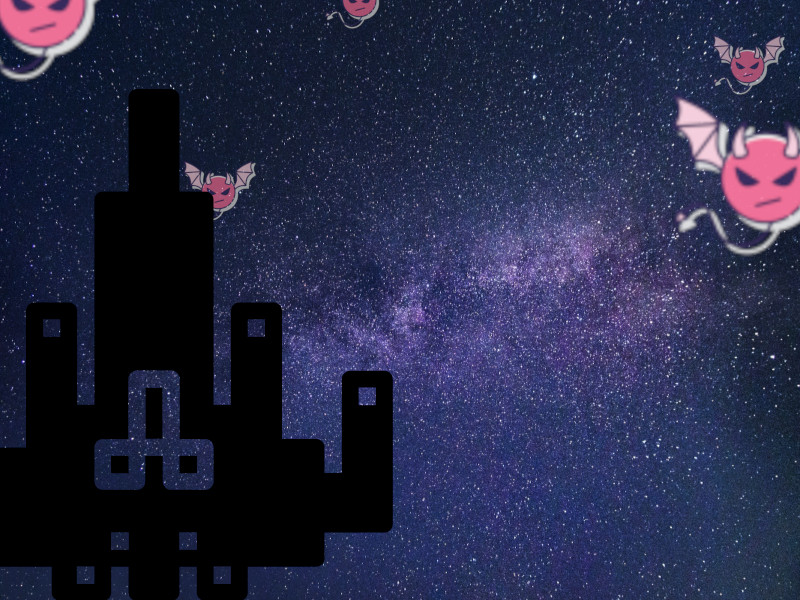

Visão Geral:
Invasão Espacial é um jogo inspirado no Space Invarders, desenvolvido em Python com a biblioteca pygame. Nele, você assume o papel de um destemido piloto espacial, encarregado de proteger a galáxia contra uma invasão de vírus alieníginas.
Objetivos:
Seu objetivo é simples: eliminar a maior quantidade de vírus possivel (não deixe que eles encostem em você). Power-ups surgiram durante a batalha para ajudar você (ou não).
Controles:
- Setas Direcionais
- Movimentam a nave
- Barra de espaço
- Dispara tiros
- Tecla ESC
- Pausa o jogo
Acesse o código fonte pelo repositório público no GitHub, ou baixe o arquivo zip do jogo
Apos a instalação, descompacte o arquivo .zip e execute o arquivo game.exe
O seu antivírus pode não permiter que abra o arquivo (isso acontece pois se trata de uma extensão .exe, que é muitas vezes utilizado para distribuição de progamas falsos que contém malware), não se preucupe, este arquivo não contém vírus. Caso isso aconteça, pressione em executar mesmo assim.
OBS: O arquivo só fuciona em sistemas Windows, para jogar em outros sistemas operacionais, execute o código disponivel no GitHub.